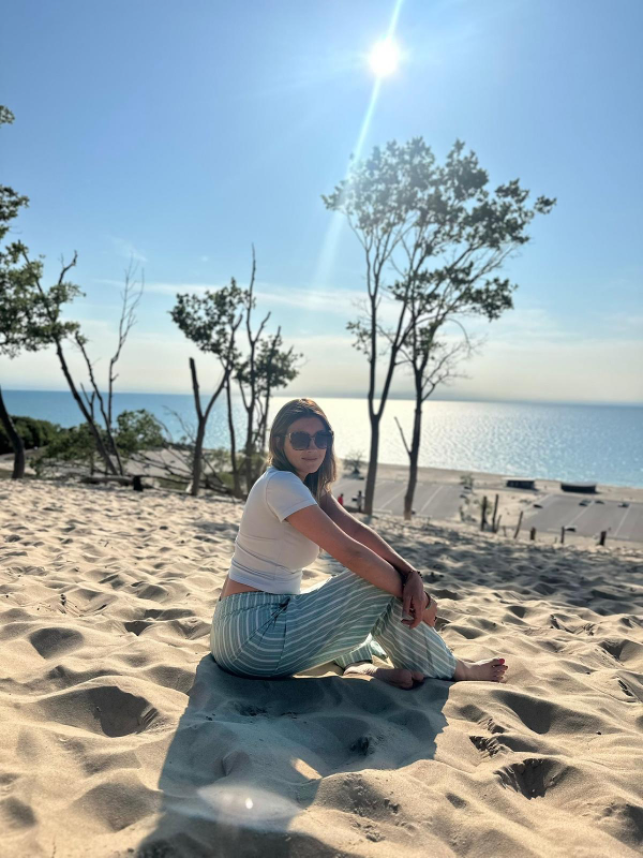

Desde muy pequeña, experimentaba sensaciones, percepciones y conexiones que no lograba comprender desde una lógica convencional. Durante años aprendí a ignorar y bloquear esas experiencias, intentando adaptarme a lo que parecía “normal”.
Hace más de 10 años, tras la trascendencia de mi madre, inicié un profundo camino de búsqueda, sanación y reconexión espiritual. Fue entonces cuando comencé a estudiar el mundo energético, la relación entre nuestras emociones y el bienestar del cuerpo, y el papel de la conciencia en los procesos de sanación.
Mi camino comenzó primero en mí: en el perdón, la aceptación y la sanación personal. A través de este proceso entendí que sanar no es solo liberar, sino reconectar con nuestra esencia y aprender a habitar nuestras emociones desde un lugar consciente y amoroso.
Hoy, mi propósito es acompañar a otros en su proceso de sanación y reconexión interior, creando espacios seguros donde puedan encontrar claridad, equilibrio y paz.
Cuento con formación en sanación energética, cirugía energética con cristales, acompañamiento espiritual en procesos de duelo y transición, y facilitación de espacios terapéuticos conscientes, integrando diferentes herramientas para brindar una experiencia profunda, respetuosa y transformadora.